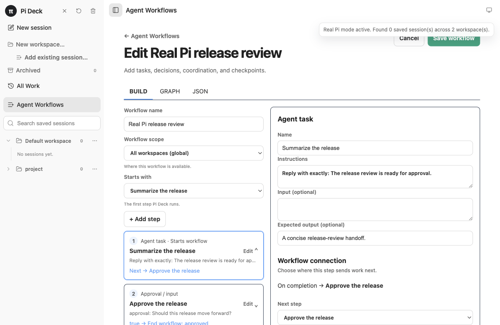
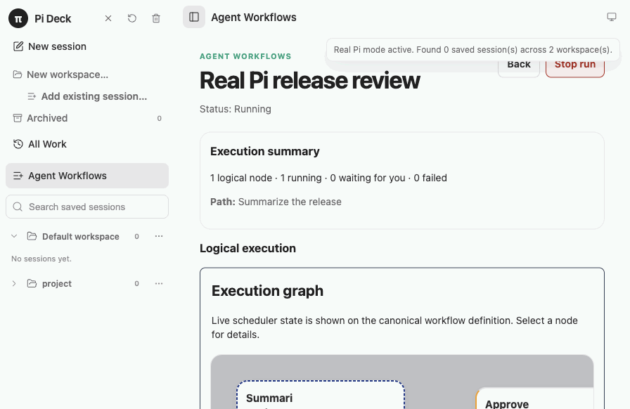
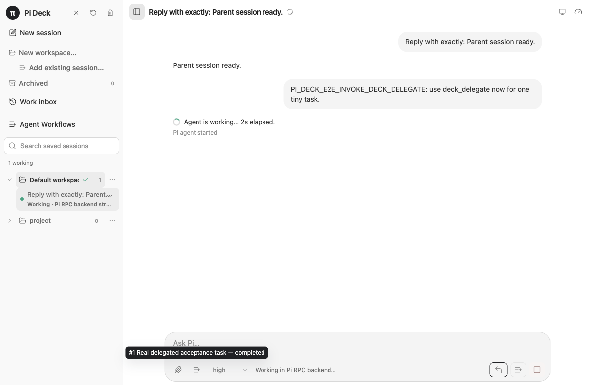

Pi
Owns model access, provider authentication, tools, resources, settings, and JSONL conversation history.
A local workspace for agentic development
Pi Deck gives Pi a focused local control plane: start from All Work, scope the same Work surface to a workspace, open session detail when you need to intervene, and keep Agent Workflows as a separate advanced surface—without juggling terminal windows.
v0.6.1 Dogfood stabilization · macOS · runs locally from source
Pi stays in charge
Pi Deck adds a local desktop control plane without replacing the Pi CLI, its providers, tools, settings, resources, or session files.
Owns model access, provider authentication, tools, resources, settings, and JSONL conversation history.
Derives All Work from runtime and Pi session state, keeps active work visible, runs explicit workflows, and gives you local controls for intervention and private planning.
Built around Pi
Start at All Work, scope it to a workspace, open session detail when you need to intervene, or switch to Agent Workflows for repeatable orchestration—all while Pi remains the local agent runtime.
Create named workspaces for projects, clients, experiments, or any other way you divide your work. Select a workspace to see its sessions, independent of the folders they use.

Start at All Work to scan every active workspace, select a workspace to scope that same surface, and open a row for session detail. Filter by needs attention, failed, pending, in progress, completed, or idle.


Resume Pi JSONL sessions and use the models, provider authentication, resources, commands, and settings you already configured. Model-backed workflow roles use Pi sessions too.

Steer an active turn, queue a follow-up, answer extension requests, retry failed prompts, or abort work while other workers continue in the background.


Create reusable global or workspace-scoped workflows with Worker, Decider, Orchestrator, and Human roles. Use a visual builder or canonical JSON, then follow a live, accessible execution graph with retries, handoffs, and Pi-session drill-in.


Enable Parallel mode on a parent conversation when a prompt contains independent work. Pi Deck deterministically plans private task sessions, queues and monitors them, then returns status and handoff to the parent—without exposing child conversations as separate controls. Choose Work in parent for a one-prompt override.

What can I run?
Use a normal Pi session for ad-hoc work, save an Agent Workflow when the process should be explicit and repeatable, or let one parent conversation plan private independent tasks.
Plan a change, implement it, verify the result, and pause for a Human approval. Use Workers for the work, a Decider to route it, and a checkpoint when a person should choose what happens next.
Use an Orchestrator to fan out bounded-concurrency research, review, or validation work. Follow every occurrence in the live graph, then use the resulting handoffs in the next step.
Keep an exploratory task in one Pi session and enable Parallel mode when it contains substantive independent work. Pi Deck plans private task sessions locally; their status and handoff stay with the parent.
Secondary controls
These supporting preferences sit outside the core workflow: choose Pi’s thinking level or model, and set the interface appearance.


How it works
All Work opens on launch as a stable primary surface for active and saved work. You can start sessions without managing workspaces; the persisted default stays hidden until you create a named workspace.
Use a local pi --mode rpc worker for ad-hoc work, or start a reusable Agent Workflow when the work needs explicit roles, decisions, loops, fan-out, or a Human checkpoint.
Select a row from All Work or scoped Work to open the existing Pi session detail. Use the timeline and controls to steer the work, then return to the exact Work origin.
Open Agent Workflows for explicit repeatable orchestration, or enable Parallel mode on a parent to plan private task sessions. Their status and completed handoff stay parent-facing.
Get started
Pi Deck is currently a macOS Electron pre-release. You will need Node.js 22.12+, npm, and a working Pi executable with its normal provider authentication configured.
pi --version in your terminal.git clone https://github.com/LiusuZeng/pi-deck.git
cd pi-deck
npm ci
npm run build
npm run deck:real -- /absolute/path/to/your/projectBefore you try it
Release confidence
v0.6.1 is the current source-only pre-release. This first dogfood stabilization patch improves session readability, prompt reuse, Work ordering, workspace menus, and workflow runtime lifecycle hardening while keeping the Unified Work model intact.
Pi Deck currently runs from source on macOS. There is no signed or notarized installer.
Read the changelog, the v0.6 baseline validation record, and the release page for release evidence.
Privacy and boundaries
Pi Deck has no hosted backend and does not sync application data. Pi-owned JSONL files remain the source of truth for conversations; Pi Deck stores local metadata for workspaces, workflow definitions and runs, and parent-facing task status. Work itself is derived in the renderer, not persisted as a separate entity.
Pi itself may contact configured model providers or run network-capable tools according to your Pi settings and environment.
Read the privacy detailsFAQ
Yes. Pi Deck is a local macOS desktop GUI and control plane for Pi coding-agent sessions. It complements Pi’s CLI workflow rather than replacing Pi itself.
A workspace is an optional, named way to organize Pi sessions independently of their folders. Pi Deck keeps globally created sessions owned internally without showing the default workspace in navigation until you create a named workspace.
Yes. Each attached conversation has an independent local Pi worker. All Work lets you monitor sessions across every workspace; selecting a workspace scopes the same Work surface to one context and a status.
An Agent Workflow is a reusable, explicit execution graph. Combine Worker, Decider, Orchestrator, and Human roles to route work, make decisions, run bounded loops or fan-out work, and pause for input when needed.
Workflows are saved orchestration definitions that you start and monitor. Parallel mode is an opt-in setting for one parent Pi conversation: Pi Deck deterministically plans private independent tasks, while their status and handoff remain parent-facing.
Yes. Pi Deck is a local Electron desktop app with no Pi Deck-hosted backend. Pi’s own configured providers and tools retain their usual behavior.
Not yet. Pi Deck is an active pre-release MVP that currently runs from source on macOS.
{kind=link}
{kind=link}
{kind=link}